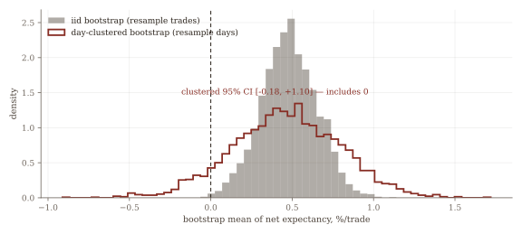
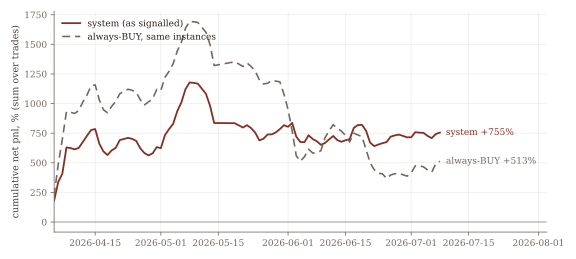
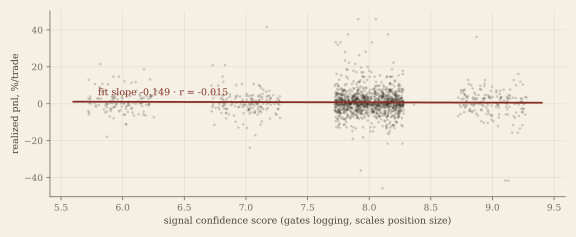

Ninety trading days of paper trades showed +0.48% per trade, and an ordinary bootstrap called it significant. The number was real and reproducible. It was not evidence. This is a study in running the statistics that hurt.
By a process engineer (SPC) in semiconductor assembly & test: the same statistical discipline I apply to production data, applied to a personal system. Paper trading throughout; no real money.
For five months I ran an automated signal system (news, technicals and derivatives data, synthesized by an LLM into BUY/SELL/HOLD calls on a basket of crypto and US equities) and paper-traded every call. By July the log showed a positive net expectancy after a 0.30% round-trip fee. Before letting a number like that anywhere near real money, I audited it the way I'd want an analyst to audit anyone's favorable result: check the sample, check the inference, check the baseline.
No. The headline count mixed in 419 [Demo] dry-run trades and 415 HOLD
advisories, calls that aren't directional bets, yet were logged and graded as trades. The sample
that matters is 1,578 real BUY/SELL trades on 90 trading days. Every number below is
computed on that sample, from the raw trade log.
Treat each trade as independent and the edge looks proven: an iid bootstrap puts the 95% CI at [+0.15, +0.83], comfortably above zero. But the system fires many signals per day on correlated assets, so the valid resampling unit is the trading day. Resample whole days instead of trades and the same point estimate loses its significance entirely; resample non-overlapping 3-day blocks (holds span up to 3 days, so even days overlap) and the interval widens further. The day-weighted mean tells the same story: +0.136%/trade against the trade-weighted +0.479.
| Estimate (same data, same point estimate) | Net exp %/trade | 95% CI |
|---|---|---|
| iid bootstrap: resample 1,578 trades | +0.479 | [+0.154, +0.825] ("significant") |
| Day-clustered bootstrap: resample 90 days | +0.479 | [−0.181, +1.102] (includes 0) |
| Excess vs always-BUY, day-clustered (§4) | +0.153 | [−0.328, +0.723] (includes 0) |
| 3-day block bootstrap: resample ~30 blocks | +0.479 | [−0.434, +1.263] (includes 0) |
| Newey–West HAC: daily mean net | +0.136 | [−0.766, +1.038] (includes 0) |

A signal system doesn't compete with zero: it competes with doing nothing intelligent. Over a broadly rising tape, the fair null is always-BUY on the identical instances: same entries, same exits, same fee, signal ignored. That do-nothing baseline earned +0.325%/trade net. The system's excess over it is +0.153%/trade, and its day-clustered CI includes zero. Gross accuracy, 53.7%, doesn't even clear the period's 53.9% up-move base rate: a coin that always calls "up" would have matched the signal layer. One disclosure: the excess is zero for every BUY by construction, so this comparison isolates the 283 SELL calls, the only place the system actually diverged from the baseline.

Every signal ships with a 1–10 confidence score that gates logging (below 6 is discarded) and scales paper position sizes. Across 1,578 real trades: Pearson r = −0.015, Spearman ρ = +0.008. One honest caveat: the gate means only the 6–10 range is observable, and range truncation attenuates correlations, so "pure noise" is stronger than the data can prove. What it can say: no linear or monotone association is detectable in the range we can see, and a score that sizes positions carries that burden of proof.

This is a post-hoc audit of my own favorable number on one fixed dataset. It can
refute the in-sample evidence; it cannot establish out-of-sample edge, which is exactly why
the promotion gate below demands new data.
Sample composition: the log begins 2026-02-04, but Feb–early Apr was an all-demo dry
run; real trading spans 2026-04-05 → 2026-07-08 (90 trading days).
One regime: a broadly rising tape; drawdown behavior is uncharacterized.
Costs assumed, not measured: the 0.30% round-trip fee matches the paper books but is
not stress-tested. The mean is also tail-sensitive (1%-trimmed: +0.405%/trade).
The pipeline evolved mid-window (prompt and gate fixes); pooling treats it as one
system.
The point of an audit is what it changes. Because of this one:
Promotion to live capital became a mechanical gate, not a feeling: day-clustered
CI > 0 and positive excess vs always-BUY, sustained over ≥60 trading days of
post-fix data.
The honesty layer moved into the production pipeline: the dashboard now prints the
day-clustered CI and the baseline excess next to every headline metric, so the flattering number
can never appear without its context again.
The confidence score is being retired from position sizing until it demonstrates
correlation with outcomes out of sample.
A positive result would have been more fun. A defensible process is worth more.